It’s a story about inviting people into your ideas, inviting other ideas into yours, and how we are better together.
Shaders, everywhere
In January, I wanted to show-not-tell a vision in my heart. I vibe coded a WebGPU environment that felt like Figma, but would allow you to add shader effects to any layer. Notably was their composability. Like lego bricks, you could stack them and make something greater than their parts. You could add them to any layer, not just a rectangular box. You could control them with dynamically generated canvas controls, for a more tactile experience that you can touch and feel. But because shaders are hard, I built in the ability to vibe shader effects into the environment.
Something clicked. Holy shit, it was working! And while I believed in this work, I could not simply record a Loom, throw it into Figma’s Slack, and hope for the best. I needed to give this thing legs, but I needed help.
Yassir
Yassir and I met during the creation of 2025’s Figma Draw launch. As a rendering and animation engineer, we became fast friends, and the deep sort of human friends that share real life, real challenges, and stories. If I had a dream, Yassir could find a way to make it happen. So I shared my concepts with him.
Would this even work? Was I approaching it the right way? Would we put these ideas into Figma, and performance would just tank? After all, a vibe-coded one-off approximation of a WebGPU canvas app was hardly an enterprise-scale, tile-rendered beast of an app.
Yassir caught the fire and believed in the vision. We ripped out my GLSL, strictly shader-effects system, and replaced it with a WebGPU interlayer pipeline system. Not only was this a bold move, it was a play for leveraging the full power of WebGPU. This meant greater security for user-run scripts, logic, particle systems, compute shaders, 3D support, and more.
As our excitement grew, he validated my prototype by producing real working versions of it in Figma design. This was the necessary puzzle piece needed to share our idea with execs.
The art of the cold DM
Dylan, our CEO and I have worked together on lots of projects throughout my years at Figma. So why not just DM him? So, I did.
Yooo, Yassir and I have been grinding on a pitch for an implementation of effects, that are ai promptable to move toward not only shaders in figma, but more than that.
Thankfully, Dylan, our CEO is super chill like that, and was totally down to see what we were building, but our pitch lacked a holistic project and team vision. Luckily, Georgia caught wind of the pitch we were preparing, and hit us up with a DM. Georgia was the key to make this happen. She helped us see the bigger picture, how this would fit into efforts our greater team was working on and excited about. She knew how to direct our efforts and get us the resources we needed to make this happen.
Georgia
Georgia had deep experience runnning teams, and assembling efforts. Naively, I had no plan other than to pitch our ideas, but where would we go after that? Georgia was the glue and the strategist that helped us see the bigger picture. There were other ideas would fit into our plans — we just didn't see it. If we combined forces, used agents as the glue, folks could build their own generative plugins and shaders.
How can we get out of our own way and help people build this stuff themselves? I think this is something we could get buy in to invest in for Config.
Georgia connected the dots, and helped us align to execs vision. She was on a mission, and wanted to join us to move it forward. And boy did she ever. Late night 2am planning sesssions, we grew this up from a few demos, to a real project pitch: people, resources, timelines and a plan execs could believe in. She jumped in and was a true project driver, alongside Yassir and I.
I was blown away by this Queen. How is she so helpful? Like, she's putting in long hours just to give this thing life. And ever since that day, she's been right by my side, not only as a brilliant collaborator, but as a sister. Even to the point, where we got the honor of representing our team's amazing work at the Config 2026 keynote.
Jason
I haven’t mentioned Generative Plugins at all. Similarly, this other fella, Jason, was sharing prototypes of adaptive and generative plugins in Figma design, and the greater team was loving it. The demos were sick as hell. Figmates kept tagging me in his posts: "Rogie, you gotta see this.” I loved what he was building: it was what I was trying to build, but for plugins.
The pitch
We combined generative shaders and plugins together, in a holistic vision. Georgia, Yassir and I reworked the deck, clarified our pitch, and got it in front of execs. We wanted Figma to be a platform where you could just make your own tools, and share them with the world. We wanted to superpower Figma.
As a trio, we jumped in. I demo'd my working environment, with promptable shader effects, complete with on canvas handles and more. Yassir validated the system and talked engineer nerd. Georgia guided the conversation, and showed we were ready as fuck to handle this challenge. And one response stuck with me:
Fuck yeah! Dylan
We were greenlit. It was go time. Ship date? Config. We had 2 months to build it.
A rag-tag team with a new way of working
Building and launching anything in two months is hard: building it for scale at Figma on an infinite canvas is even harder. We knew we'd need to bring the hype, and create a culture of excitement and passion around the project. Naturally, we needed a brand, swag and some amped music to get us started.
We'd need to act like a startup. This meant less design crits, more daily 1:1s and oodles of trust from our leaders. And one massive slack channel with all the engineers and designers all together. Weekly we presented to core sponsors to gain alignment and present our direction.
Not only did I build PropsKit (the web components based UI library that powers generative plugins), but we also vibe-prototyped out all the interactions and features we wanted to build. While vibe coded prototypes we're helpful, in retrospect, we should have just locked ourselves in a room with engineers, as well as pushed our own PRs onto the main Figma codebase.
- All hands on deck: PropsKit, PRs, everything everywhere all at once - Fignation (Full ass team hype) - Collaboration (Vectors, Motion) - The finish line (seeing the team come together)Piers
Piers, from our Modyfi acquisition, is this brilliant artist and engineer working on Figma Motion. We’ve always found this kinship — like two kids in a digital sandbox, building rad things and sharing with each other. While we weren’t officially on this project working together, we were playing with ideas together, usually on a Saturday morning, excitedly exchanging the next sick idea. He was a constant source of inspiration and support, pushing me to think bigger.
Better, together
We did it! We built a new way of working, and a new way of building. All of these Figmates played a huge part in support, research, demos, engineering, and so much more to pull this off. I'm incredibly grateful for all of you.
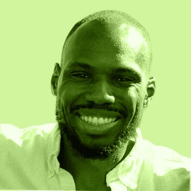
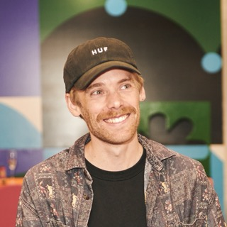
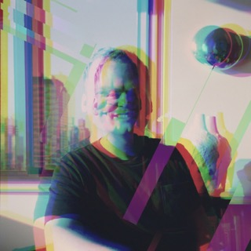
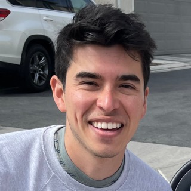
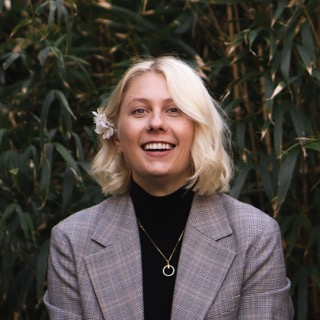
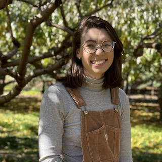
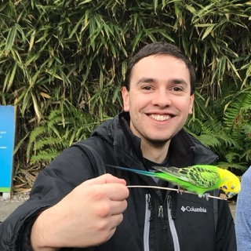
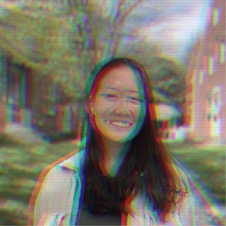
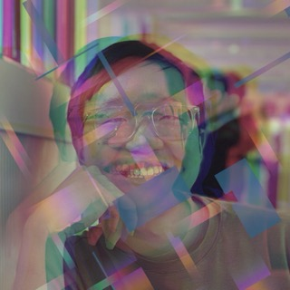
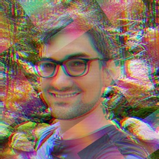
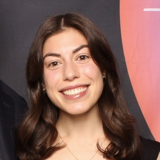
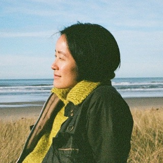
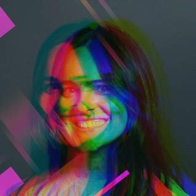
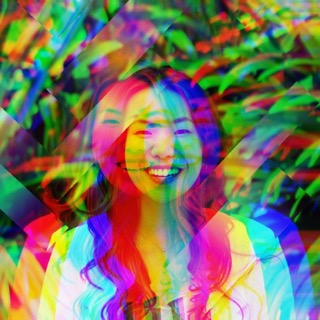
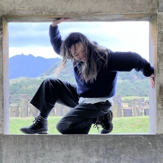
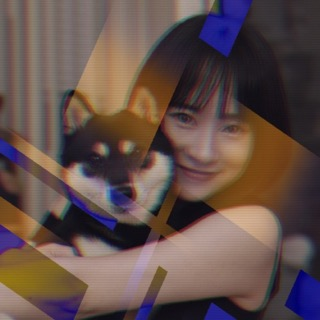
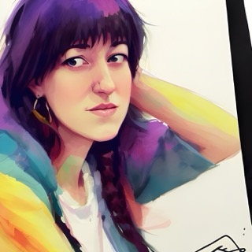
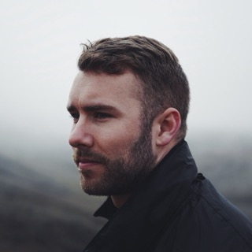
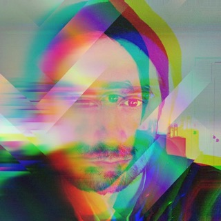
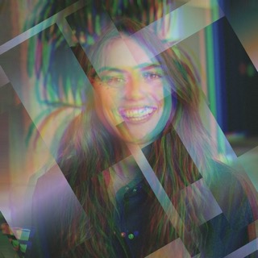
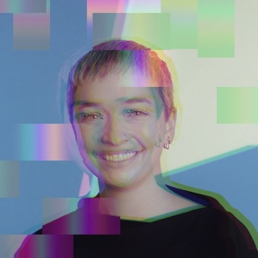
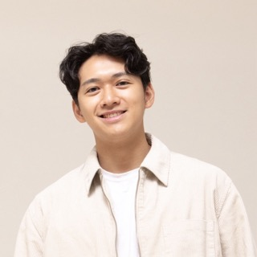
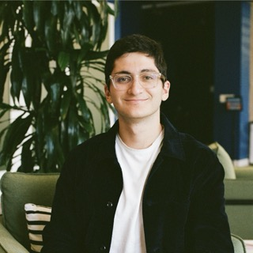
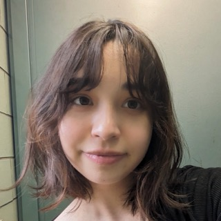
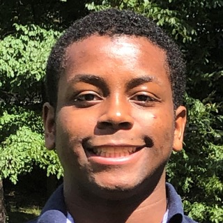
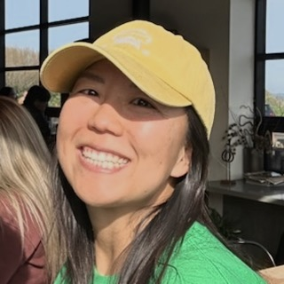
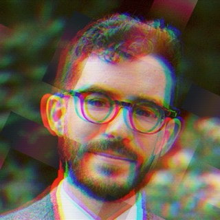
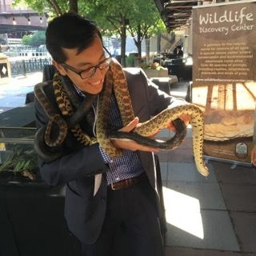
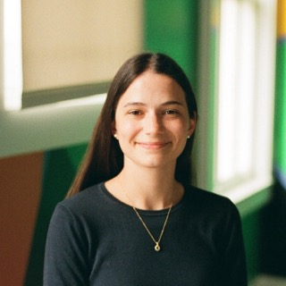
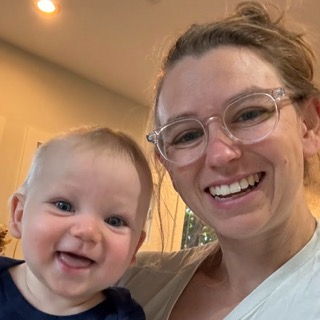
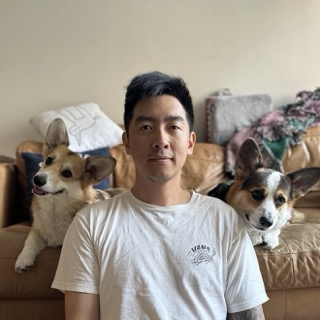
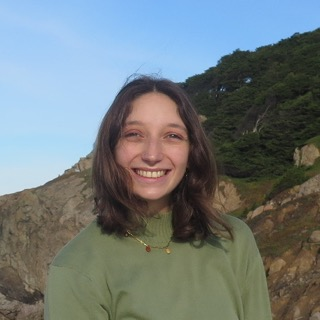
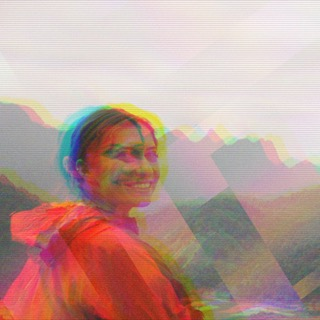
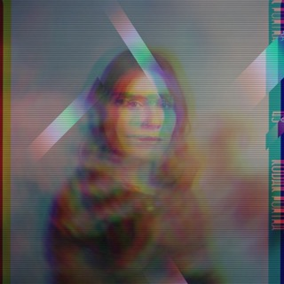
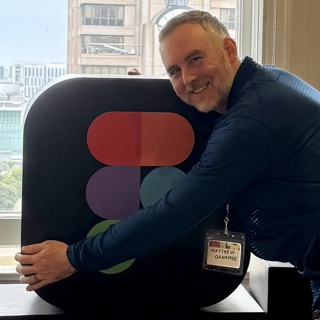
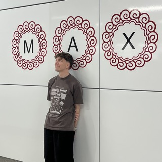
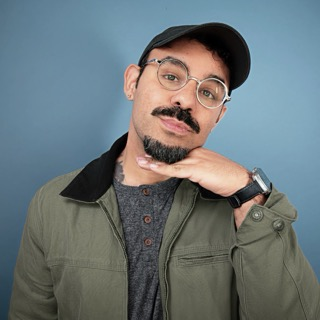
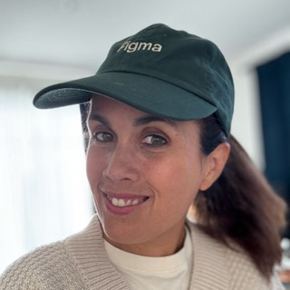
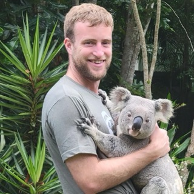
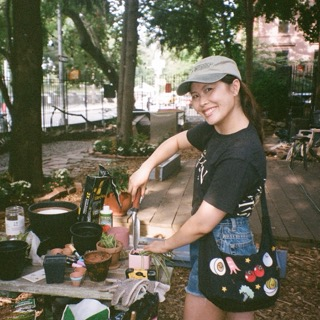
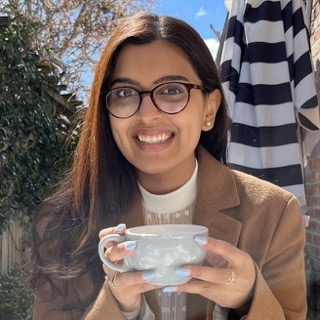
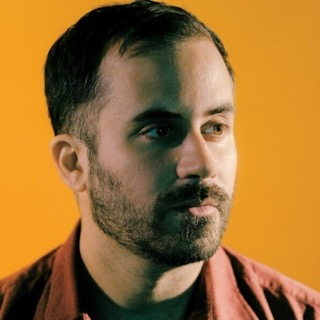
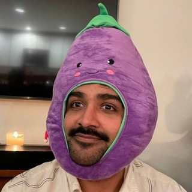
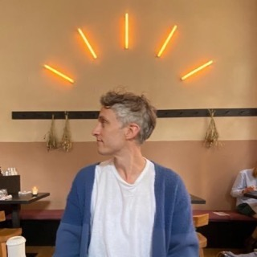
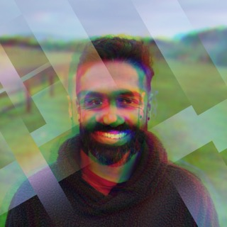
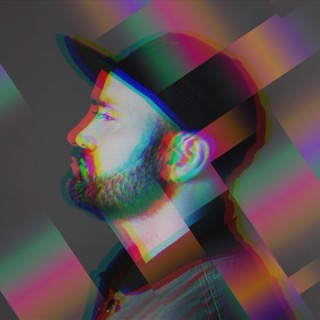
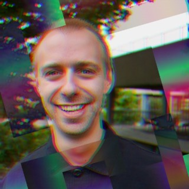
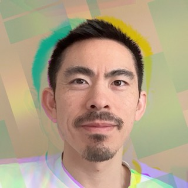
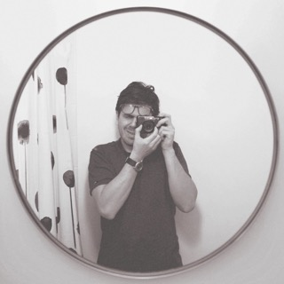
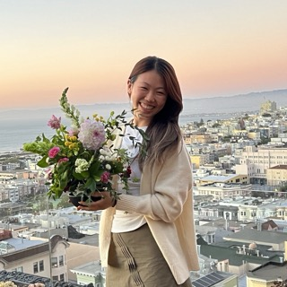